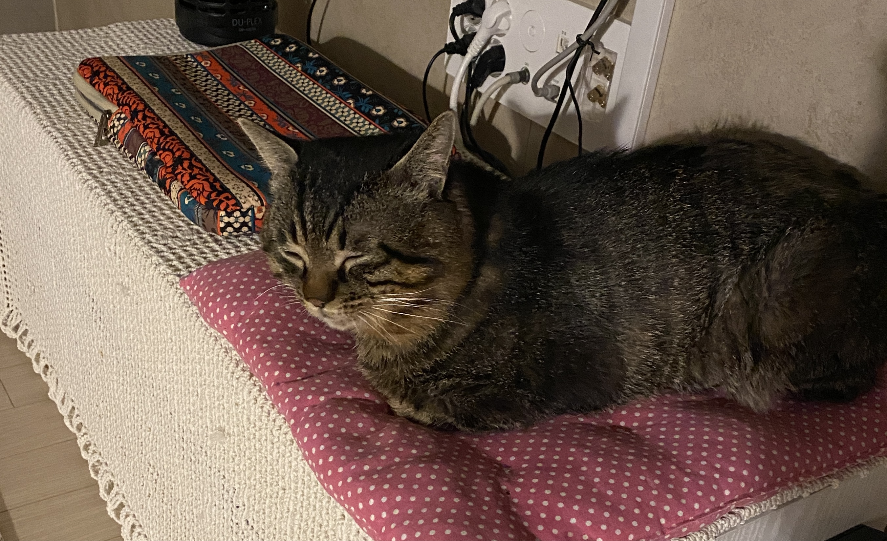

There are many ways to keep your cat healthy and happy throughout their life. As a member of the family, your cat deserves the very best possible care. One of the best ways to ensure your cat stays happy and healthy is by making sure they have their preventive care checkups. What your cat requires will change as they age. Cat’s lives are broken into four stages: kittens, young adults, mature adults, and seniors. Each stage requires special attention to certain health and behavioral areas. The chart below includes a breakdown of life stages that your cat advances through, and concentrates on how to best support them in each stage. Use the information on this page to observe your cat at home, as well as discuss these items with your veterinarian during your cat’s checkups.